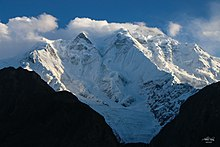
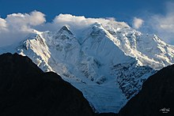

Rakaposhi also known as Dumani is a mountain of the Karakoram range, located in the Nagar valley, Bagrote valley of the Gilgit-Baltistan territory of Pakistan. The mountain is extrememly broad measuring almost 20km from East to West. It is the only peak on Earth that drops directly, uninterrupted, for almost 6000m from the summit to the base.
Rakaposhi is a mountain in the Karakoram mountain range in the Gilgit-Baltistan territory, about 100 km (62 mi) north of the city of Gilgit.It is ranked 27th-highest in the world. Rakaposhi rises over the Nagar Valley.Rakaposhi is the only mountain in the world with more than 5,000 meters height between base camp and the summit; by contrast all of the other tallest mountains in the world have less than 5,000 meters from base camp to top.The first successful recorded ascent by non-natives was in 1958 by Mike Banks and Tom Patey, members of a British expedition, via the Southwest Spur/Ridge route.
 
